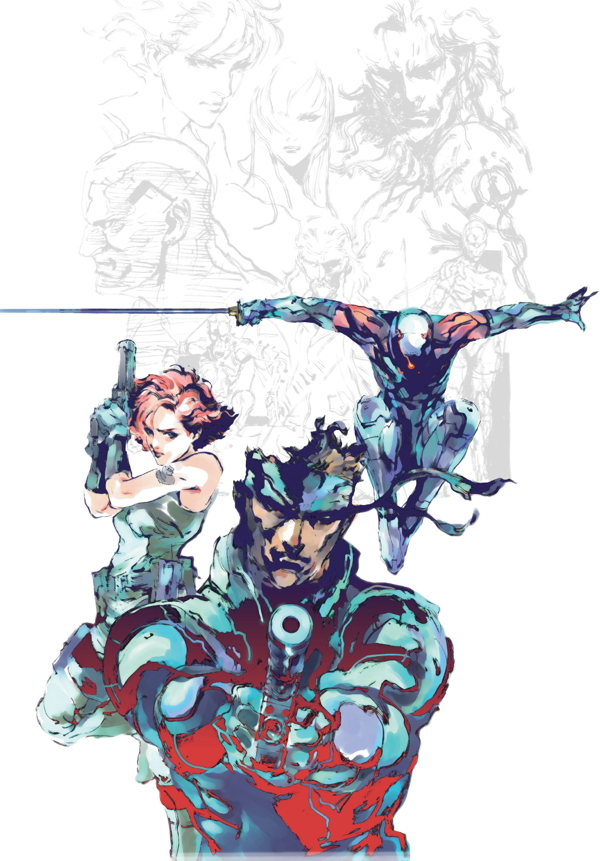
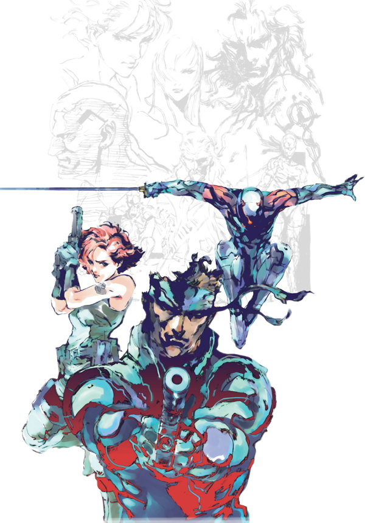
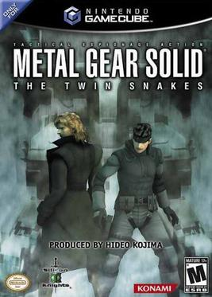

El nacer de la saga
El 3 de septiembre de 1998 se lanzó Metal Gear Solid para las consolas NES y MSX, aunque luego salió para PSX y PC. Se trata del primer título desarrollado en un entorno tridimensional, a diferencia de sus dos predecesores en 2D.
El pionero del sigilo
Es conocido como uno de los grandes primeros juegos de espionaje, el cual caracterizaría
al resto de la saga y el que derivaría en todo un subgénero de videojuegos.
Se caracteriza por la complejidad de su argumento y de los personajes, sus largas escenas cinematográficas;
el empleo o mención de armamento, organizaciones o medios de transporte (vehículos, helicópteros,etc.)
de guerra existentes en la realidad; y sus intrigadas tramas, que profundizan en diversos temas filosóficos.

Fue además el único juego de la saga doblado al español, con el famoso Alfonso Vallés poniéndole
la voz al protagonista Snake.
Todo esto unido al fascinante carácter del protagonista dio lugar a uno de los juegos más influyentes y que perduran por más tiempo en la memoria del jugador.
Se sacó una versión del juego con gráficos de MGS2 para GameCube llamado Metal Gear Solid: The Twin Snakes.